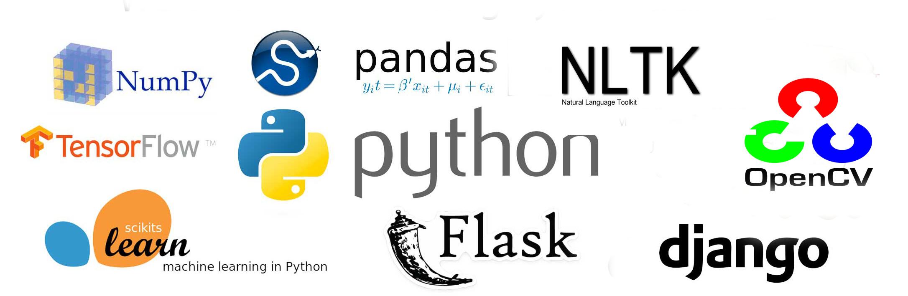
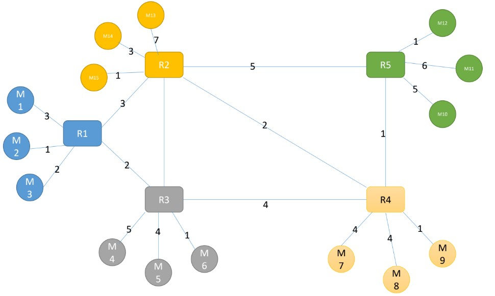
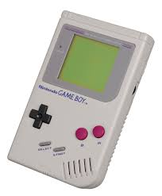

Python Projects
Network Emulator
Gameboy 1984Movie recommendation site.
Cinemago is a movie discovery and rating platform built using Flask. Users can browse, rate, and suggest movies. Admins can add new content via web scraping, and user preferences are stored in a lightweight SQLite database.
Collection of Python-based projects.
Projects focusing on data cleaning, natural
language processing (NLP), statistical analysis, and basic machine
learning.
These projects reflect my applied learning.
The Network Emulator simulates a computer network.
The computer network consisting of routers
and end machines (e.g., computers).
Messages are sent from one device to another
using destination addresses and follow a routing path across
multiple routers. This project aims to simulate routing, queuing,
and message handling in a simplified network.
C++ based Gameboy.
A lightweight C++ collection of classic games(Snake, Wordle, Hangman), built with simplicity, logic, and fun in mind, it is modeled on the GameBoy made by Nintendo in 1989.